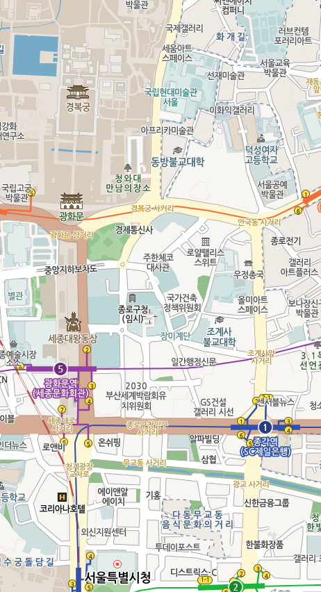

@@include('../common/head.html')
@@include('../common/header_address.html')
@@include('../common/road_search.html')
사용자위치 마커
마커클릭!

내위치조회
@@include('../common/navigation.html') @@include('../common/script.html')